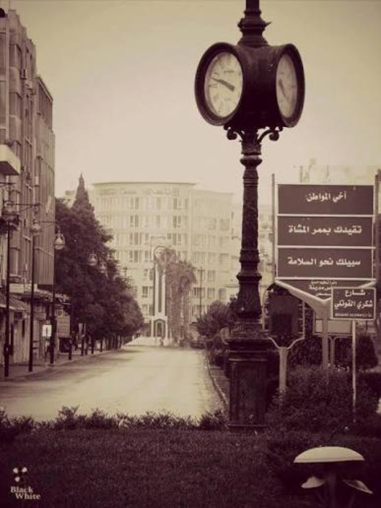
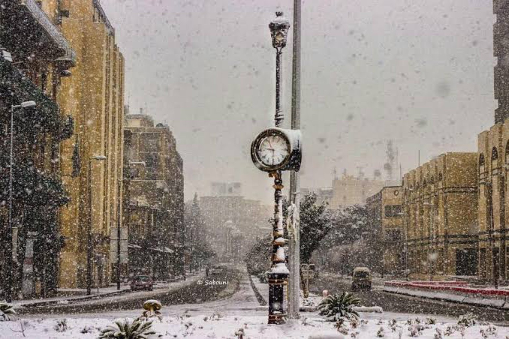

بداية الدقات
في عام 1925، وخلال فترة الانتداب الفرنسي، أُقيمت ساعة حمص القديمة في شارع الحميدية، القلب النابض للمدينة. كانت الساعة آلية ألمانية الصنع، مثبتة على عمود حديدي مزخرف يحمل في قمته فانوساً قديماً، لتحكم إيقاع حياة الحمصيين لعقود طويلة.

العصر الذهبي
لعقود من الزمن، ظلت الساعة القديمة شاهدة على تفاصيل الحياة في حمص. من مواعيد فتح المحال التجارية في شارع الحميدية، إلى لقاءات الأصدقاء عند "ساحة الساعة"، كانت الساعة نقطة التقاء الجميع وعلامة فارقة في ذاكرة المدينة.

رحلة عبر الزمان
مرّت الساعة بعدة مواقع عبر تاريخ المدينة: من شارع الحميدية إلى دوار المحافظة، ثم إلى شارع الحسكة، ومن ثم العودة إلى ساحة الساعة (الحميدية)، قبل أن تستقر مجدداً في شارع المحافظة. في كل موقع، حملت معها ذكريات جديدة.

لحظة الوداع
في عام 2014، أُزيلت الساعة القديمة بحجة "الصيانة"، لكنها لم تعد إلى مكانها. كان الوداع صعباً على أهل المدينة الذين نشأوا على صوت دقاتها. لم تكن مجرد ساعة، بل كانت جزءاً من الهوية الحمصية الأصيلة.